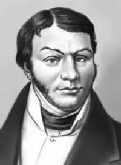
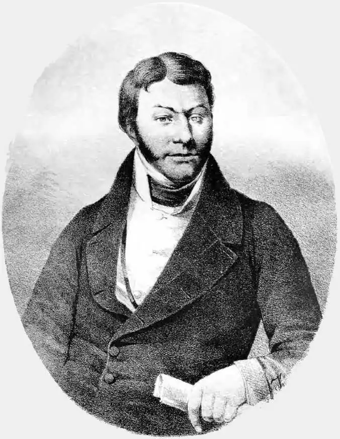
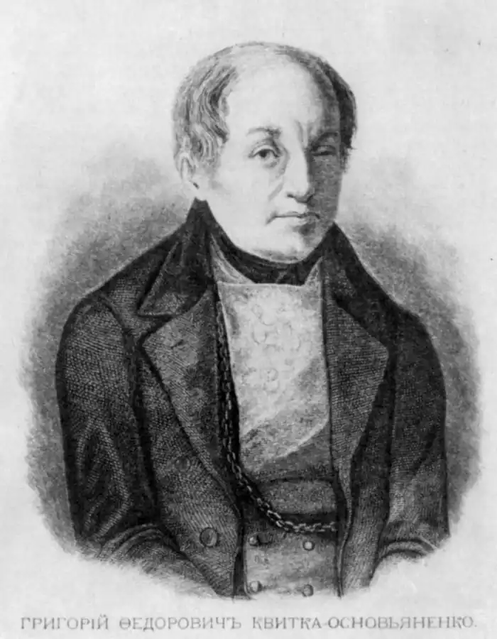

Г. В. КВІТКА-ОСНОВ'ЯНЕНКО
(1778 — 1843)
Народився Григорій Федорович Квітка (літературний псевдонім — Основ'яненко) в с. Основа біля Харкова у дворянсько-поміщицькій сім'ї. Служив комісаром у народному ополченні (1806 — 1807), директором Харківського театру (1812), був повітовим предводителем дворянства (1817 — 1828), совісним суддею, головою харківської палати карного суду. Проживаючи в с. Основа під Харковом або самому Харкові, Квітка-Основ'яненко брав участь буквально у всіх важливих освітньо-культурних починаннях, зокрема був ініціатором видання журналу "Украинский вестник", альманахів "Утренняя звезда" і "Молодик", першої збірки українських прислів'їв і приказок. Перебував письменник у творчій співдружності з колективом Харківського театру. Свої ранні фейлетони, статті, жартівливі вірші (10-ті—початок 20-х pp.) Квітка-Основ'яненко публікував переважно в харківській періодиці ("Украинский вестник", "Харьковский Демокрит", "Харьковские известия"). З творів цього періоду найбільший інтерес читача викликали "Письма Фалалея Повинухина" — цикл сатиричних прозових фейлетонів, написаних у формі листів до видавців журналу від поміщика-невігласа ("Украинский вестник", 1816 — 1817; "Вестник Европы", 1822). В кінці 20-х — на початку 30-х pp. написані шість російських сатиричних комедій, серед яких: 1827р. — "Приезжий из столицы, или Суматоха в уездном городе" (опублікована 1840р.; за сюжетом і складом персонажів передує "Ревізору" Гоголя); 1828р. — "Дворянские выборы" (стала сенсацією (понад тисячу примірників в Москві розкупили за два місяці), після прочитання Миколою І була заборонена цензурою). 1829р. — "Шельменко — волостной писарь"; 1830р. — "Ясновидящая" (не була опублікована через цензурну заборону). 1832р. — повість "Маруся" українською мовою. 1834р. — книга перша "Малороссийских повестей, рассказываемых Грыцьком Основьяненком", збірки прозових творів (повістей та оповідань) українською мовою. 1836 — 1837рр. — книга друга збірки "Малороссийских повестей, рассказываемых Грыцьком Основьяненком". Ще ряд повістей та оповідань письменника публікується в журналах та альманахах, повість "Козир-дівка" виходить у Петербурзі окремим виданням. Прозові твори Квітки-Основ'яненка українською мовою поділяються на дві основні групи: бурлескно-реалістичні оповідання і повість; сентиментально-реалістичні повісті. До першої групи належать, зокрема, гумористичні оповідання "Салдацький патрет" (1833), "Мертвецький Великдень", "От тобі і скарб", "Пархімове снідання", "Підбрехач", а також гумористично-сатирична повість "Конотопська відьма" (1833). Серед сентиментально-реалістичних творів Квітки-Основ'яненка — повісті "Маруся" (1832), "Козир-дівка" (1836), "Сердешна Оксана" (1838), "Щира любов" (1839). Центральним персонажем кожної з них виступає сільська дівчина. 1835р. — соціально-побутова комедія "Сватання на Гончарівці" 1838р. — соціально-побутова комедія "Шельменко-денщик" (написана російською мовою, центральний персонаж — Шельменко — говорить по-українськи), що вважається найвищим досягненням Квітки в драматургії. Серед численних прозових творів Квітки-Основ'яненка, написаних російською мовою, виділяються сатиричні романи "Пан Халявский" (1840) та "Жизнь и похождения Петра Степанова сына Столбикова" (1841, перший варіант — 1833, твір зазнав переслідування цензури), повісті "Ганнуся", "Панна сотниковна", "1812 год в провинции", оповідання "Званый вечер" із задуманого циклу "Губернские сцены", історично-художній нарис "Головатый", близька за жанром до фізіологічного нарису повість "Ярмарка", фізіологічний нарис "Знахарь". 1841р. — "Предания о Гаркуше". Кращі твори Квітки-Основ'яненка одними з перших представляли українську літературу загальноросійському й європейському читачеві: починаючи з 1837р. ряд його оповідань і повістей друкується в російських перекладах у Петербурзі та Москві; 1854р. в Парижі виходить французькою мовою "Сердешна Оксана". Трохи пізніше його твори перекладаються польською, болгарською, чеською мовами.